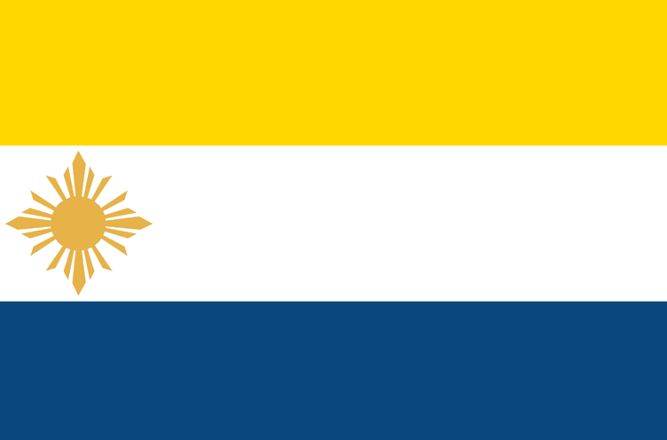
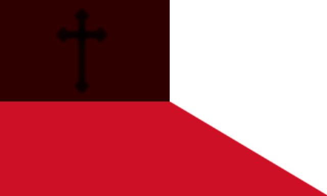
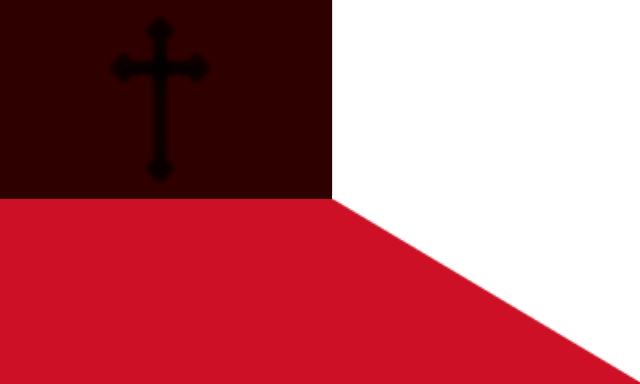
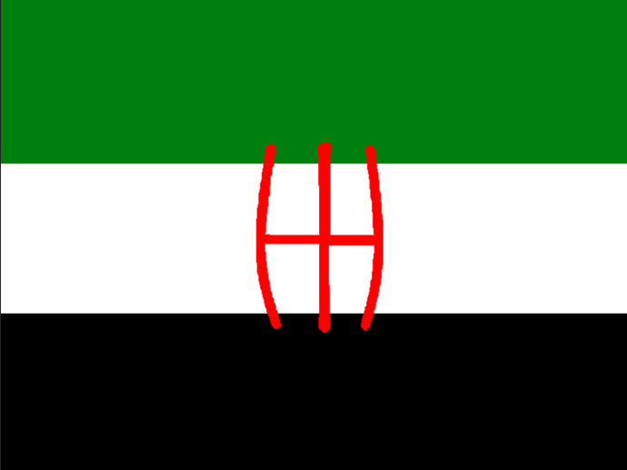
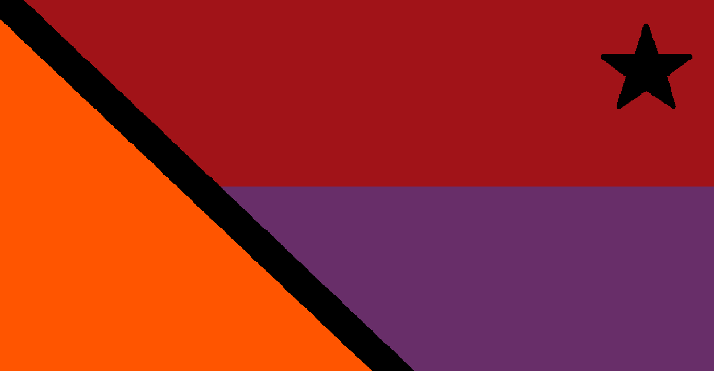

Spawn 3. sezóny byl už ze začátku dost živý, do 4 dní po zahájení z původní vesnice zbyl jen kostel, který byl následovně neformálně zasvěcen Big Chungusovi, byla postavena a brzy zničená koferenční místrnst a probíhaly značné úpravy pláže s barem. Brzy se také začaly zabírat pozemky pro budoucí obchodní čvrť. Přes neaktivní léto se spawn vyvíjel pomalu, ale později se naplnil vším možným od baru přes obchodní loď po ruletu! Tohle místo také zažilo backrooms v podobě muzea, nebo ender-ruletu. Ještě před prosincem také na spawnu vyrostl velký strom na budoucí dárky.
Složený z Netherita, Shoguna, Patryka, Chawnly a Hakidaki, rozkládá se (dle oficiálních zdrojů) NĚKDE, hlavním náboženstvím je křesťanství. Tamní obyvatelé po svrhnutí předchozí vlády změnili název na Polska540
 

Terra Corajosa [Korachosa], která zahrnuje pouze Dentrixe je pouštní stát poměrně daleko od spwnu vedle Norte Tubaero, jinak izolovaný od spawnu a In Alia Manu.
Rozkládajíc se velmi blízko spawnu, tento pobřežní stát se skládá z Matakadyho, Trixaa, Kovaldy, Jestinga, Andreje, Quidochleba, Ladisky a Lenina. Jako jediného boha uznávají Big Chunguse, jemuž již byl zasvěcen kostel a náměstí. V této nejprosperitnější zemi vyrostla i MVA - Matakadyho Vesmírná Agentura.

Server se rozeběhl ve středu 6. 7. 2022, kdy se přímo startu účastnilo 6 lidí, takže byl start živý a s lagy...
Nicméně se všichni hned rozdělili do skupin, ze kterých během dalších dnů vznikaly státy a server se pomalu zalidňoval.
Během dalších několika měsíců vznikly tři státy.
Koncem září vznikla nová společnost jménem MVA - Matakadyho vesmírná agentura, která se rozrůstala nevídaně rychle.
25. 11. byla postavena aréna pro gladiátory, jejíž učelem je budoucí olympiáda. Ta se bphužel z nedostatku plánování nikdy neuskutečnila.
30. 11. už i na spawnu stál vánoční stromek.
Ke konci aktivita upadala, ale i přes to se podařilo společnosti MVA postavit raketu a přistát na měsíci!
Jedním rozsáhlým projektem, který se nepodařilo dokončit, byla ender-ruleta na spawnu.
Tím oficiálně na přelomu roku 2022 a 2023 skončila sezóna 3, trvala 5 měsíců a 25 dní!